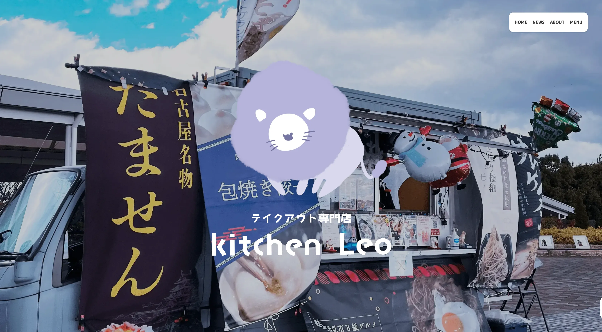
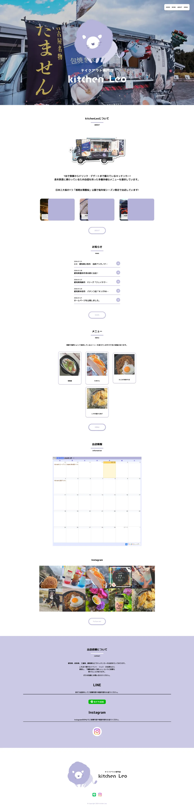
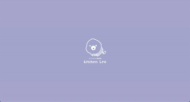
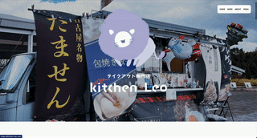

Webサイト制作
kitchen Leo

概要
進級制作展に展示する作品です。 はじめて実際にクライアントに向けてWebサイト制作をしました。
| 制作時期 | 2023年10月〜 |
| 制作期間 | 約4ヶ月 |
| 制作人数 | 個人制作 |
| 使用したもの |
HTML CSS JavaScript Sass BEM Jquery WordPress Figma Illustrator Photoshop VisualStudioCode |
| URL | https://kitchen-leo.com/ |
使用フォント
「M PLUS Rounded 1c」
Google Fontsあいうえおアイウエオ永
ABCDEFGHIJKLMNOPQRSTUVWXYZ
abcdefghijklmnopqrstuvwxyz
かわいいデザインなので角の丸いこちらのフォントを採用しました。
完成版

完成版ではメニューの部分の紫を減らし清潔感を出すことで料理が美味しく美味しく見えるようにしました。
クライアントからの要望でお知らせとメニューの更新ができるようにWordPressを実装しました。
記事のカテゴリーを取得し、それぞれのページに表示されるようにしました。
意識したところ
最初にサイトの雰囲気を伝わって印象に残るといいなと思ったのでローディングアニメーションをいれました。

ふんわりとしたアニメーションを多くいれてより優しいほんわりした印象にしました。

作品制作を通して
はじめてクライアントがいるサイト制作とても大変でした。クライアントに聞かなくてはいけないことが多く、お願いすることも多いので早め早めの行動が大切だと実感しました。クライアントが求めているものと自分が作っているものが合っているのかを考えるのがとても難しかったです。 見ている人が楽しめるようなアニメーションを考えるのが難しかったですが、とても楽しかったです。